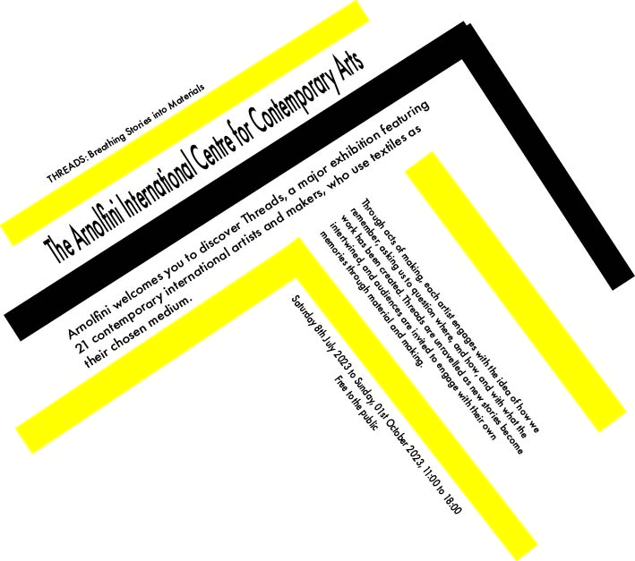
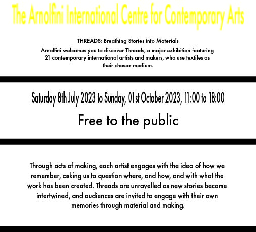
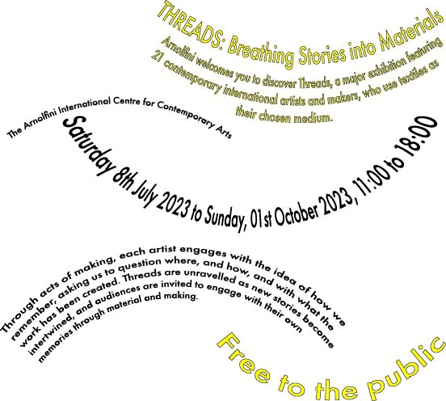
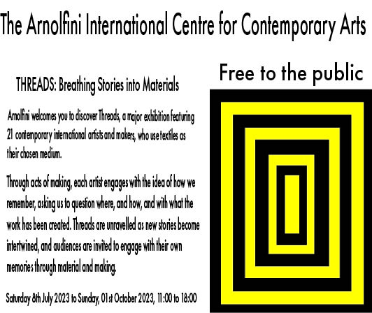
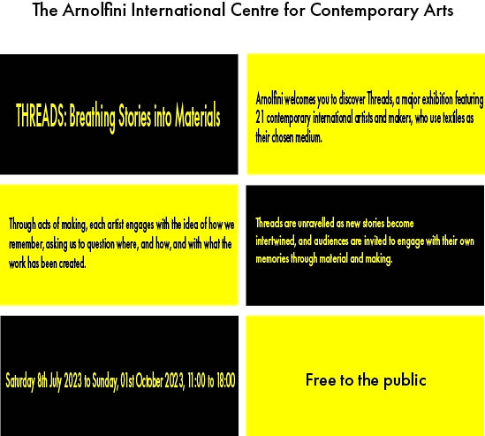
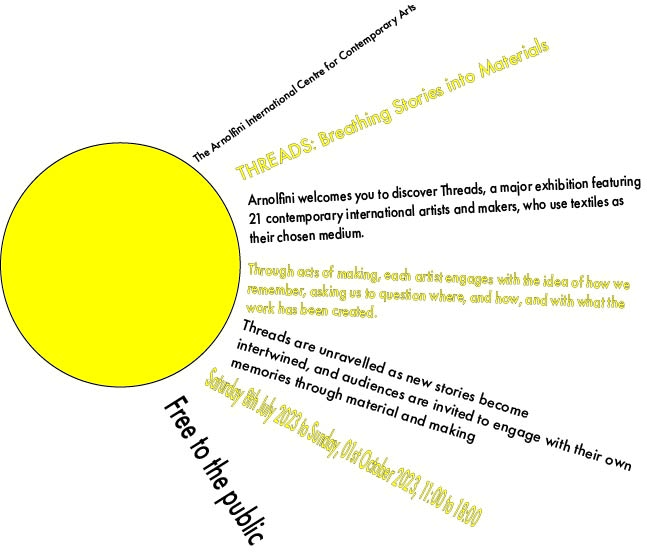
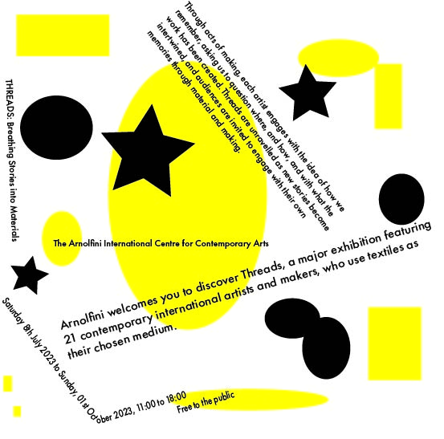
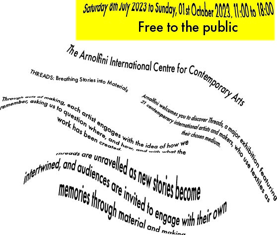

Carp project!
Typography Project!
Axial
Axial arranges elements on either side of a line or axis. Axial typographic systems are not always used on their own and can be combined with other typographic systems to make an engaging effect with the viewer.
In my image different blocks of text are arranged opposite each other, this is how the typographic system is used to draw in an audience.
Bilateral
Bilateral arranges all the elements by centering them in the middle of the page. It is one of the more basic systems but gets straight to the point
My example image does exactly this. I added lines inbetween the paragraphs to make it a little more interesting.
Dilational
The dilational typographic system involves one or many center points where the text wraps around these points making an almost ripple effect
My created image has several of these center points and although the points are irregular its a satisfying effect that will attract a viewers attention.
Grid
Modular
Radial
Random
Transitional
Coding worksheets!


(These are just snippets of code you can find the products of my completed worksheets by clicking here and here )
As i completed foundation year last year i found that there was a lot of things that had already been covered for me so i found this project quite easy and the worksheets easy to follow, however i still enjoyed this project as it helped me get practice using HTML and CSS aswell as teaching me some more about flexbox which i didnt understand very well last year.
Reflective essay!